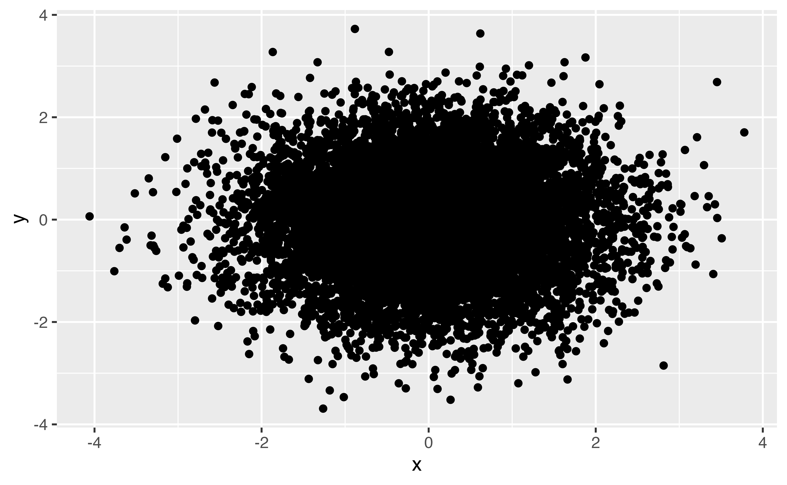

Data Visualization in R
customizing ggplot2
2025-08-09
Scales: position scales
scale_x_continuous() scale_y_date() scale_x_log10()
Scales: aesthetic scales
scale_color_hue() scale_fill_brewer() scale_shape_manual()
Your Turn 10
1. Change the color scale by adding a scale layer. Experiment with scale_color_distiller() and scale_color_viridis_c(). Check the help pages for different palette options.
2. Set the color aesthetic to gender. Try scale_color_brewer().
3. Set the colors manually with scale_color_manual(). Use values = c("#E69F00", "#56B4E9") in the function call.
4. Change the legend title for the color legend. Use the name argument in whatever scale function you’re using.
Color Palettes
https://github.com/EmilHvitfeldt/r-color-palettes

Themes
Non-data ink (text, background, etc)
Pre-specified themes: theme_gray() (default), theme_minimal(), theme_light(), etc.
theme()
mtcars |>
ggplot(aes(hp, mpg, color = factor(cyl))) +
geom_point(size = 3) +
scale_x_log10() +
scale_colour_brewer(name = "Cylinders", palette = "Set2") +
theme_minimal() +
theme(
axis.text = element_text(size = 16),
legend.text = element_text(size = 8, face = "bold"),
legend.direction = "horizontal"
)
theme elements
| element | draws |
|---|---|
element_blank() |
nothing (remove element) |
element_line() |
lines |
element_rect() |
borders and backgrounds |
element_text() |
text |
Your Turn 11
1. Change the theme using one of the built-in theme functions.
2. Use theme() to change the legend to the bottom with legend.position = "bottom".
3. Remove the axis ticks by setting the axis.ticks argument to element_blank()
4. Change the font size for the axis titles. Use element_text(). Check the help page if you don’t know what option to change.

High-density plots
?rnorm, ?Distributions
High-density plots

High-density plots
- Transparency
- Binning
- Visualize other summary data
Your Turn 12
Take a look at the diamonds data set from ggplot2. How many rows does it have?
1. Make a scatterplot of carat vs. price. How’s it look?
2. Try adjusting the transparency.
3. Replace geom_point() with 2d bins.
4. Try hex bins.
Labels, titles, and legends
Labels, titles, and legends
Add a title:
ggtitle()
labs(title = "My Awesome Plot")
Labels, titles, and legends
Change a label:
xlab(), ylab()
labs(x = "X Label", y = "Y Label")
Labels, titles, and legends
Change a legend:
scale_*() functions
labs(color = "Wow, labs does everything", fill = "Yup")
Labels, titles, and legends
Remove the legend:
theme(legend.position = "none")
Your Turn 13
1. Add a title.
2. Change the x and y axis labels to include the units (inches for hip and pounds for weight). You can use either labs() or xlab() and ylab()
3. Add scale_linetype() and set the name argument to “Sex”.
Saving plots
ggsave()
Saving plots
ggsave()
Your Turn 14
Save the last plot and then locate it in the files pane.
Your Turn 14
Save the last plot and then locate it in the files pane.
Take aways:
You can use this code template to make thousands of graphs with ggplot2.